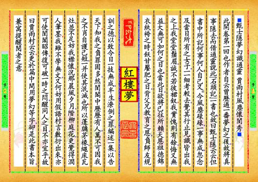
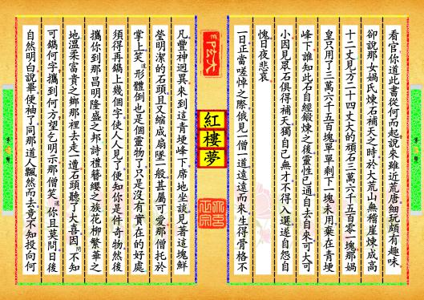
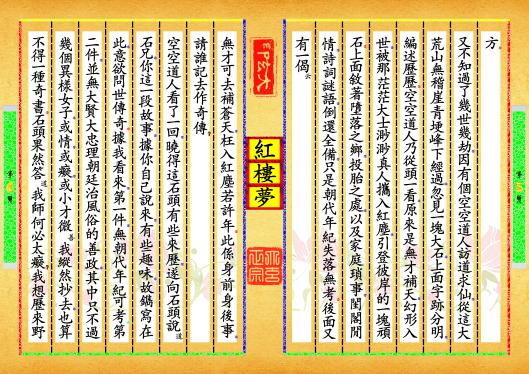
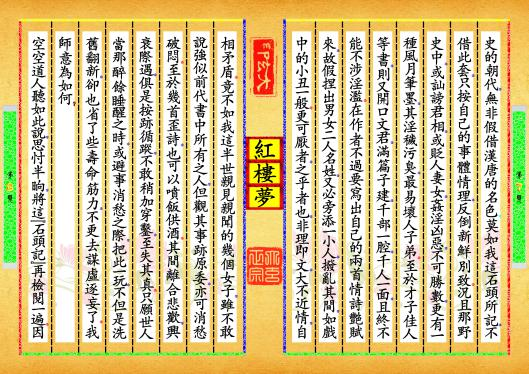
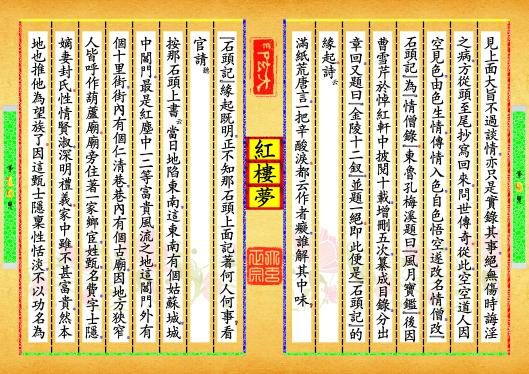

-
第【1-2】页 ⬛甄士隱夢幻識通靈▂賈雨村風塵懷閨秀⬛此開卷第一回也。作者自云曾歷過一番夢幻之後，故將真事隱去，而借通靈說此《石頭記》一書也，故曰甄士隱云云。但書中所記何事何人？自己又云，今風塵碌碌，一事無成，忽念及當日所有之女子，一一細考較去，覺其行止見識皆出我之上，我堂堂鬚眉，誠不若彼裙釵。我實愧則有餘，悔又無益，大無可如何之日也！當此日，欲將已往所賴天恩祖德錦衣紈袴之時，飫甘饜肥之日，背父兄教育之恩，負師友規訓之德，以致今日一技無成，半生潦倒之罪，編述一集，以告天下。知我之負罪固多，然閨閣中歷歷有人，萬不可因我之不肖自護己短，一并使其泯滅也。所以蓬牖茅椽，繩床瓦灶，並不足妨我襟懷。況那晨風夕月，階柳庭花，更覺得潤人筆墨。我雖不學無文，又何妨用假語村言敷衍出來，亦可使閨閣昭傳，復可破一時之悶，醒同人之目，不亦宜乎？故曰賈雨村云云。更於篇中間用夢幻等字，卻是此書本旨，兼寓提醒閱者之意。预览书籍 全文配置
-
第【3-4】页 看官！你道此書從何而起？說來雖近荒唐，細玩頗有趣味。卻說那女媧氏煉石補天之時，於大荒山無稽崖煉成高十二丈、見方二十四丈大的頑石三萬六千五百零一塊。那媧皇只用了三萬六千五百塊，單單剩下一塊未用，棄在青埂峰下。誰知此石自經鍛煉之後，靈性已通，自去自來，可大可小。因見眾石俱得補天，獨自己無才，不得入選，遂自怨自愧，日夜悲哀。一日，正當嗟悼之際，俄見一僧一道，遠遠而來，生得骨格不凡，豐神迥異。來到這青埂峰下，席地坐談，見著這塊鮮瑩明潔的石頭，且又縮成扇墜一般，甚屬可愛。那僧托於掌上，笑道，形體倒也是個靈物了，只是沒有實在的好處；須得再鐫上幾個字，使人人見了，便知你是件奇物，然後攜你到那昌明隆盛之邦、詩禮簪纓之族、花柳繁華之地、溫柔富貴之鄉那裡去走一遭。石頭聽了大喜，因問，不知可鐫何字？攜到何方？望乞明示。那僧笑道，你且莫問，日後自然明白。說畢，便袖了，同那道人飄然而去，竟不知投向何预览书籍 全文配置
-
第【5-6】页 方。又不知過了幾世幾劫，因有個空空道人訪道求仙，從這大荒山無稽崖青埂峰下經過，忽見一塊大石，上面字跡分明，編述歷歷。空空道人乃從頭一看，原來是無才補天，幻形入世，被那茫茫大士渺渺真人攜入紅塵，引登彼岸的一塊頑石。上面敘著墮落之鄉，投胎之處，以及家庭瑣事，閨閣閒情，詩詞謎語，倒還全備，只是朝代年紀失落無考。後面又有一偈云，無才可去補蒼天，枉入紅塵若許年。此係身前身後事，請誰記去作奇傳？空空道人看了一回，曉得這石頭有些來歷，遂向石頭說道，石兄，你這一段故事，據你自己說來，有些趣味，故鐫寫在此，意欲問世傳奇。據我看來，第一件，無朝代年紀可考；第二件，並無大賢大忠理朝廷治風俗的善政，其中只不過幾個異樣女子，或情，或癡，或小才微善，我縱然抄去，也算不得一種奇書。石頭果然答道，我師何必太癡？我想歷來野预览书籍 全文配置
-
第【7-8】页 史的朝代，無非假借漢唐的名色；莫如我這石頭所記，不借此套，只按自己的事體情理，反倒新鮮別致。況且那野史中，或訕謗君相，或貶人妻女，姦淫凶惡，不可勝數，更有一種風月筆墨，其淫穢污臭，最易壞人子弟。至於才子佳人等書，則又開口文君，滿篇子建，千部一腔，千人一面，且終不能不涉淫濫。在作者不過要寫出自己的兩首情詩艷賦來，故假捏出男女二人名姓，又必旁添一小人，撥亂其間，如戲中的小丑一般。更可厭者，之乎者也，非理即文，大不近情，自相矛盾。竟不如我這半世親見親聞的幾個女子，雖不敢說強似前代書中所有之人，但觀其事跡原委，亦可消愁破悶。至於幾首歪詩，也可以噴飯供酒。其間離合悲歡，興衰際遇，俱是按跡循蹤，不敢稍加穿鑿，至失其真。只願世人當那醉餘睡醒之時，或避事消愁之際，把此一玩，不但是洗舊翻新，卻也省了些壽命筋力，不更去謀虛逐妄了。我師意為如何？空空道人聽如此說，思忖半晌，將這《石頭記》再檢閱一遍。因预览书籍 全文配置
-
第【9-10】页 見上面大旨不過談情，亦只是實錄其事，絕無傷時誨淫之病，方從頭至尾抄寫回來，問世傳奇。從此，空空道人因空見色，由色生情，傳情入色，自色悟空，遂改名情僧，改《石頭記》為《情僧錄》。東魯孔梅溪題曰《風月寶鑑》。後因曹雪芹於悼紅軒中披閱十載，增刪五次，纂成目錄，分出章回，又題曰《金陵十二釵》，並題一絕。即此便是《石頭記》的緣起。詩云，滿紙荒唐言，一把辛酸淚。都云作者癡，誰解其中味？《石頭記》緣起既明，正不知那石頭上面記著何人何事？看官請聽，按那石頭上書云，當日地陷東南，這東南有個姑蘇城，城中閶門，最是紅塵中一二等富貴風流之地。這閶門外有個十里街，街內有個仁清巷，巷內有個古廟，因地方狹窄，人皆呼作葫蘆廟。廟旁住著一家鄉宦，姓甄，名費，字士隱，嫡妻封氏。性情賢淑，深明禮義。家中雖不甚富貴，然本地也推他為望族了。因這甄士隱稟性恬淡，不以功名為预览书籍 全文配置